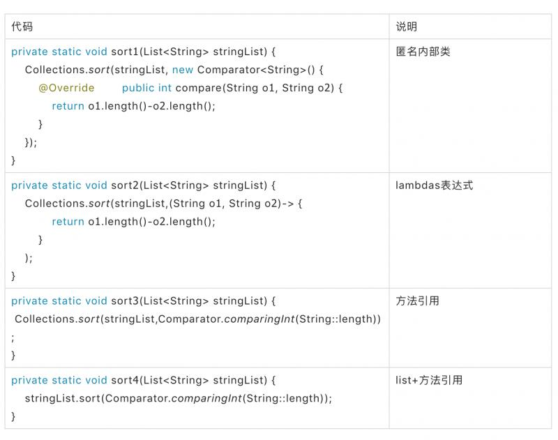
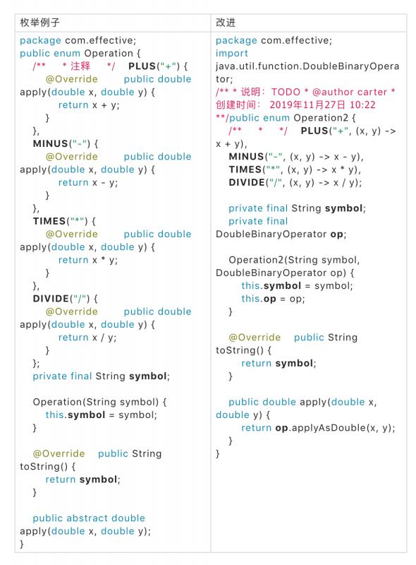
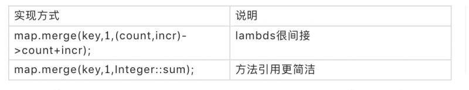
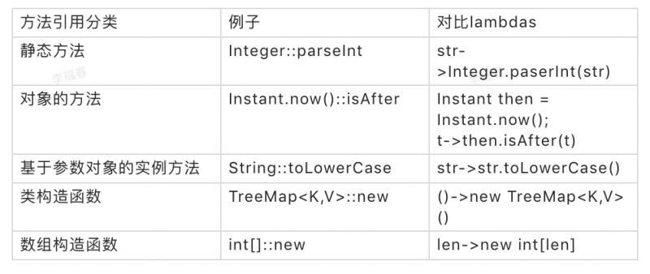
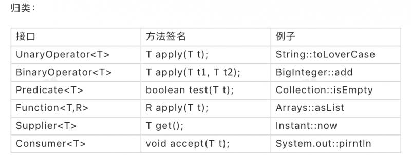
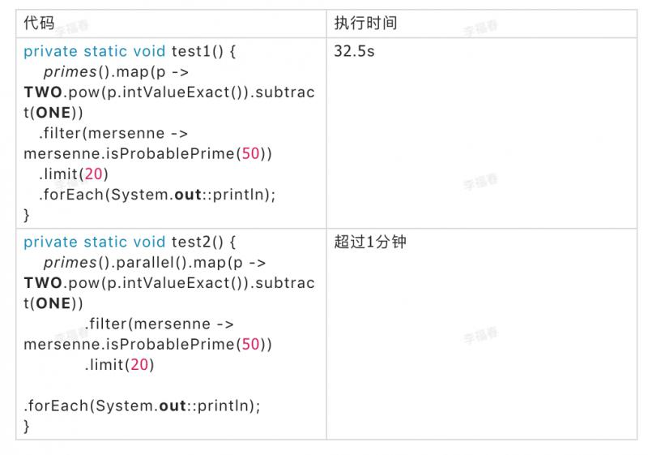

编码多年，总有一些最佳实践，Java也是，比如设计模式，比如Effective Java 3 (ej3) 。 设计模式先后看过《大话设计模式》，《HeadFirst 设计模式》。而EffectiveJava3我打算阅读英语原版的，翻译过来，提高一下自己的英文阅读能力，同时也思考一下大师总结的编程最佳实践，应用到日常编码工作中。
开端从ef3作者的[宣讲PPT](https://www.yuque.com/office/yuque/0/2019/pptx/186661/1574762227798-103405a7-8cec-4953-b03c-26e8eff4150c.pptx)开始。建议先快速看一遍ppt,不过全部是英文的，我把它翻译过来，作为我开始ej3的开始。
| 变化 | ej3 | ej2 |
|---|---|---|
| 新增章节 | 一个新章节 | |
| 新增规则 | 14条新规则 | |
| 重写规则 | 2个重写规则 | |
| 修改规则 | 所有规则条目彻底修改 | |
| 发布日期 | 2017 | 2008 |
| jdk版本 | java9 | java6 |
| 页数 | 366 | 315 |
使用匿名内部类的代码可读性和简洁性不断提高；
类型推断:
Collections.sort(stringList,(s1,s2)->Integer.compare(s1.length(),s2.length()));
等价于：Collections.sort(stringList,(Comparator<String>)(String s1,String s2)->Integer.compare(s1.length(),s2.length()));
类型推断很魔幻：编译器如果需要帮助它会告诉你；
类型推断的警告：你必须理解泛型之后才能使用lambdas；
使用labmbdas的警告：

把一个抽象方法的实现替换成了一个函数式接口；
说明：public class ExeTest {
public static void main(String[] args) {
new Thread(()->action()).start();
System.out.println("====");
new Thread(ExeTest::action).start();
Arrays.asList("aaa","bbb","CCC").stream().map(x->x).collect(Collectors.toList());
Arrays.asList("aaa","bbb","CCC").stream().map(Function.identity()).collect(Collectors.toList());
}
private static void action() {
System.out.println("do action ");
}
}
写在最后：jdk9中一共43个标准的函数式接口；
使用标准的函数式接口的好处：例子中方法可以使用BiPredicate来替代；
为何如此关注比较器 Comparator?很多有用的默认方法可以组合和转换实例，6种形式的thenComparing和reversed；
基于目的写函数式接口的标准：如果你写了一个函数式接口，记住，它是一个接口：所有的接口都需要特别关注；
什么是流？支持无痛并行：简单的替换流为parallelStream:你可能看到性能提升；
标准实现，不使用流
public static void test1(String[] args) throws FileNotFoundException {
File dictionary = new File(args[0]);
int minGroupSize = Integer.parseInt(args[1]);
Map<String, Set<String>> groups = new HashMap<>();
try (Scanner s = new Scanner(dictionary)) {
// Item 9
while (s.hasNext()) {
String word = s.next();
groups.computeIfAbsent(alphabetize(word), (unused) -> new TreeSet<>())
.add(word);
}
}
for (Set<String> group : groups.values()) {
if (group.size() >= minGroupSize) {
System.out.println(group.size() + ": " + group);
}
}
}使用流，连字符串的处理都使用流public static void test2(String[] args) throws IOException {
Path dictionary = Paths.get(args[0]);
int minGroupSize = Integer.parseInt(args[1]);
try (Stream<String> words = Files.lines(dictionary)) {
words.collect(
groupingBy(word -> word.chars().sorted()
.collect(StringBuilder::new,
(sb, c) -> sb.append((char) c),
StringBuilder::append).toString()))
.values().stream()
.filter(group -> group.size() >= minGroupSize)
.map(group -> group.size() + ": " + group)
.forEach(System.out::println);
}
} 使用流 public static void test3(String[] args) throws IOException {
Path dictionary = Paths.get(args[0]);
int minGroupSize = Integer.parseInt(args[1]);
try (Stream<String> words = Files.lines(dictionary)) {
words.collect(groupingBy(Test2::alphabetize))
.values().stream()
.filter(group -> group.size() >= minGroupSize)
.forEach(g -> System.out.println(g.size() + ": " + g));
}
}为何不用streas去实现alphabetize方法？实现结果：不清晰，很难写正确，很难阅读，可能更慢；
看一下这段代码输出结果：
"Hello world".chars().forEach(System.out::print);
输出结果是：
7210110810811132119111114108100
因为chars得到的是一个IntStream；所以输出了整数；
修正：
"Hello world".chars().forEach(i-> System.out.print((char)i));
禁止使用streams处理char;
一个难题： 笛卡尔产品
private static List<Card> newDeck() {
List<Card> result = new ArrayList<>();
for (Suit suit : Suit.values()) {
for (Rank rank : Rank.values()) {
result.add(new Card(suit, rank));
}
}
return result;
}
private static List<Card> newDeck2() {
return Stream.of(Suit.values())
.flatMap(suit -> Stream.of(Rank.values()).map(rank -> new Card(suit, rank)))
.collect(toList());
} 写在最后：并行化不一定更快。
为何例子中的并行程序跑的如此慢？准则：不要无差别的并行化；
parallelize适合的场景：中间操作也会影响：mapping和filter非常适合，limit不适合；
parallel()仅仅只是优化：测量性能在使用前后；
ppt首先对比了3个版本的effectiveJava的区别，然后挑选了新增的章节中的5个条目进行了演示，确实让人耳目一新。Java8,9最亮的点就是lambdas和streams .要好好利用和理解。
原创不易，转载请注明出处。